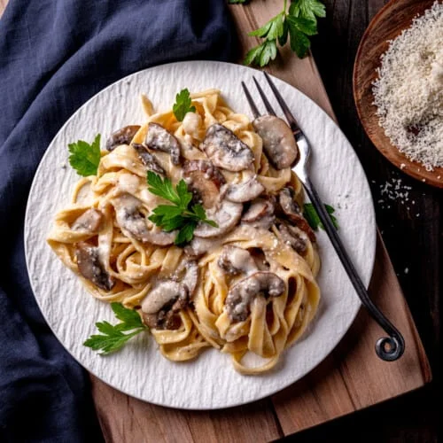

Fettuccine Alfredo
Description
This is a simple and delicious recipe for Fettuccine Alfredo.
Fettuccine Alfredo is a classic Italian pasta dish made with a rich and creamy sauce. The combination of butter, heavy cream, and a blend of Parmesan and Romano cheeses creates a velvety texture that perfectly coats the fettuccine noodles. This dish is simple yet indulgent, making it a favorite for both weeknight dinners and special occasions. Garnished with fresh parsley and a touch of black pepper, Fettuccine Alfredo is a comforting and satisfying meal that is sure to please any pasta lover.
Ingredients
- 8 oz. fettuccine
- 1 1/2 cups heavy cream
- 1/2 cup unsalted butter
- 1 cup grated Parmesan
- 1/2 cup grated Romano cheese
- 1/4 cup chopped fresh parsley
- Salt and freshly ground black pepper
Steps
- Bring a large pot of salted water to a boil, add fettuccine and cook according to package instructions; reserve 1/2 cup pasta water and drain pasta.
- While pasta is cooking, melt butter in a large heavy skillet over medium heat. Add cream and simmer for 5 minutes, then add cheeses and whisk quickly, heating through.
- Remove from heat; add salt, pepper, and parsley.
- Toss fettuccine in the sauce, adding some of the reserved pasta water to reach desired consistency.
- Top with additional Parmesan and parsley.
Enjoy!
